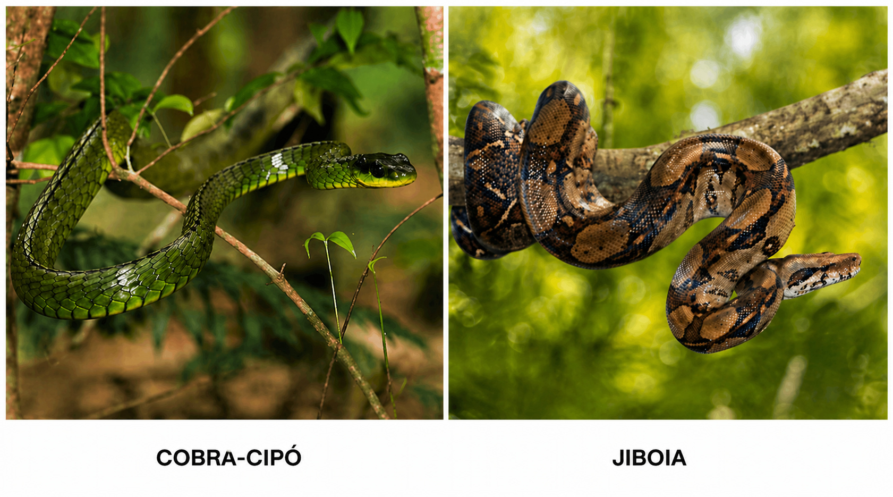

Identificação
Esta serpente não apresenta características típicas das principais espécies peçonhentas de importância médica, como chocalho, fosseta loreal ou padrão anelado característico das corais verdadeiras.
Peçonhenta?
Não apresenta importância médica significativa para os seres humanos, embora deva sempre ser observada com cautela e sem contato direto.
Importância ecológica
As serpentes sem importância médica desempenham papel fundamental no controle populacional de roedores, anfíbios e pequenos invertebrados, contribuindo para o equilíbrio ecológico.
Todas as serpentes possuem importância ecológica e não devem ser mortas, pois contribuem para a manutenção da biodiversidade.